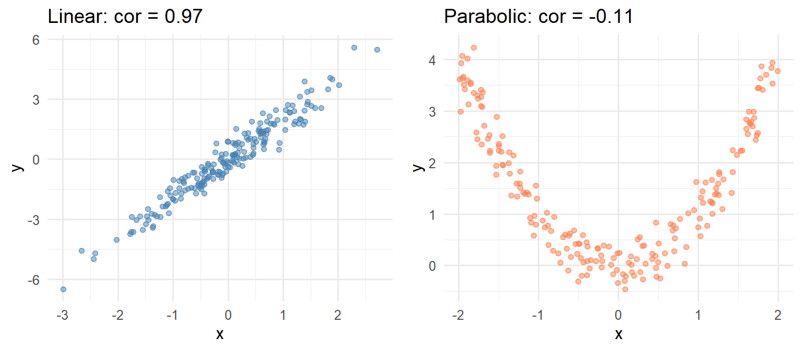

| Box | Contents | Probabilities | H |
|---|---|---|---|
| Box 1 | {A,A,A,A} | (1) | 0 |
| Box 2 | {A,A,B,B} | (½, ½) | 1 |
| Box 3 | {A,B,C,D} | (¼,¼,¼,¼) | 2 |
| Box 4 | {A,A,B,C} | (½,¼,¼) | 1.5 |
Quantifying Uncertainty and Information
Part 1 introduced EDA from a geometric perspective:
This chapter takes a different approach: information theory.
These concepts appear repeatedly in ML:
| Concept | Intuition |
|---|---|
| Entropy | How uncertain is an outcome? |
| Mutual Information | How much information do (X, Y) share? |
| KL Divergence | How costly is using the wrong distribution? |
All three connect to the Twenty Questions game.
Imagine a box of tickets, each bearing a capital letter.
The game:
Entropy measures the difficulty of this game.
\[\text{Box 1: } \{A, A, A, A\}\]
How many questions needed?
Zero. You already know the answer.
\[H = 0\]
\[\text{Box 2: } \{A, A, B, B\}\]
One question: “Is it A?”
One question always suffices.
\[H = 1 \text{ bit}\]
\[\text{Box 3: } \{A, B, C, D\}\]
First question: “Is it A or B?”
Second question: “Is it [first of the pair]?”
Two questions always suffices.
\[H = 2 \text{ bits}\]
\[\text{Box 4: } \{A, A, B, C\}\]
Optimal strategy:
\[\text{Average} = \frac{1}{2}(1) + \frac{1}{2}(2) = \frac{3}{2} \text{ questions}\]
\[H = 1.5 \text{ bits}\]
For a probability distribution \((p_1, p_2, \ldots, p_K)\):
\[H = -\sum_{k=1}^{K} p_k \log_2(p_k)\]
Equivalently:
\[H = \sum_{k=1}^{K} p_k \log_2\left(\frac{1}{p_k}\right)\]
Units: bits (binary digits) when using \(\log_2\)
| Box | Contents | Probabilities | H |
|---|---|---|---|
| Box 1 | {A,A,A,A} | (1) | 0 |
| Box 2 | {A,A,B,B} | (½, ½) | 1 |
| Box 3 | {A,B,C,D} | (¼,¼,¼,¼) | 2 |
| Box 4 | {A,A,B,C} | (½,¼,¼) | 1.5 |
Pattern: Entropy is maximized when all outcomes are equally likely.
General approach:
Maximum questions: \(\lceil \log_2(K) \rceil\) for \(K\) distinct values
Average questions: Often fewer (as Box 4 shows)
Now each ticket has a letter and a number.
\[\text{Box 5: } \{A_1, A_1, B_1, C_1, A_2, A_2, B_2, C_2\}\]
This is equivalent to:
Independently!
When \(X\) and \(Y\) are independent:
\[H_{X,Y} = H_X + H_Y\]
For Box 5:
\[H = 1.5 + 1 = 2.5 \text{ bits}\]
Intuition: No information about the letter helps you guess the number, and vice versa.
\[\text{Box 6: } \{A_1, A_2, B_1, C_2\}\]
Same marginal distributions:
But now they’re dependent!
New strategy for Box 6:
Total: 2 questions (not 2.5!)
\[H_{X,Y} = 2 < H_X + H_Y = 2.5\]
\[MI_{X,Y} = H_X + H_Y - H_{X,Y}\]
Interpretation: The reduction in uncertainty about \(Y\) from knowing \(X\) (and vice versa).
For Box 6:
\[MI = 1.5 + 1 - 2 = 0.5 \text{ bits}\]
Properties:
Figure 1
\[H_{X,Y} = H_X + H_Y - MI_{X,Y}\]
Scenario: You’re shown Box 5 (independent) and optimized your strategy accordingly, but the actual box is Box 6 (dependent).
The cost of misinformation: 0.5 extra questions per round
\[KL(P \| Q) = \sum_{x} P(x) \log_2\left(\frac{P(x)}{Q(x)}\right)\]
Interpretation: Expected extra bits needed when using code optimized for \(Q\) but the true distribution is \(P\).
\(P\) = true distribution (what the box actually is)
\(Q\) = assumed distribution (what you think it is)
| x | P(x) | Q(x) | log₂(P/Q) | Term |
|---|---|---|---|---|
| A₁ | 1/4 | 1/4 | 0 | 0 |
| A₂ | 1/4 | 1/4 | 0 | 0 |
| B₁ | 1/4 | 1/8 | 1 | 1/4 |
| B₂ | 0 | 1/8 | — | 0 |
| C₁ | 0 | 1/8 | — | 0 |
| C₂ | 1/4 | 1/8 | 1 | 1/4 |
\[KL(P \| Q) = 0 + 0 + \frac{1}{4} + 0 + 0 + \frac{1}{4} = \frac{1}{2}\]
Confirms: Using the wrong distribution costs 0.5 bits.
Not symmetric: \(KL(P \| Q) \neq KL(Q \| P)\) in general
Non-negative: \(KL(P \| Q) \geq 0\)
Zero iff identical: \(KL(P \| Q) = 0 \Leftrightarrow P = Q\)
Not a true distance (fails triangle inequality)—hence “divergence”
| Concept | ML Application |
|---|---|
| Entropy | Decision tree splits |
| Mutual Information | Feature selection |
| KL Divergence | Loss functions, variational inference1 |
| Cross-entropy | Classification loss |
The standard loss function for classification—cross-entropy—is derived from KL divergence.
Minimizing cross-entropy loss is equivalent to minimizing the divergence between:
When splitting a node:
\[\text{Information Gain} = H(\text{parent}) - \sum_{\text{children}} \frac{n_{\text{child}}}{n_{\text{parent}}} H(\text{child})\]
Strategy: Choose the split that maximizes information gain.
Correlation captures linear relationships.
Mutual Information captures any dependence.

Correlation misses the parabolic relationship. Mutual information catches it.
| Concept | Question Answered |
|---|---|
| Entropy \(H\) | How uncertain is \(X\)? |
| Mutual Information \(MI\) | How much does \(X\) tell us about \(Y\)? |
| KL Divergence \(KL\) | How costly is assuming \(Q\) when truth is \(P\)? |
\[MI_{X,Y} = KL\big(P_{X,Y} \| P_X \cdot P_Y\big)\]
Mutual information is the KL divergence from independence.
\[H(X) = -\sum_x P(x) \log_2 P(x)\]
\[MI_{X,Y} = H_X + H_Y - H_{X,Y}\]
\[KL(P \| Q) = \sum_x P(x) \log_2 \frac{P(x)}{Q(x)}\]
Consider a box of tickets matching the UC Berkeley admissions data.
A classifier predicts probabilities for 3 classes. True class is 1.
Compare cross-entropy loss for these predictions:
| Prediction | \((\hat{p}_1, \hat{p}_2, \hat{p}_3)\) |
|---|---|
| Confident & correct | \((0.9, 0.05, 0.05)\) |
| Less confident | \((0.6, 0.2, 0.2)\) |
| Uniform | \((0.33, 0.33, 0.34)\) |
When would mutual information identify a useful feature that correlation misses?
Why is KL divergence not symmetric? Give an example where direction matters.
How does information theory connect to compression?
A Mathematical Theory of Communication — Shannon’s original 1948 paper
Shannon Entropy, Information Gain, and Picking Balls from Buckets — Udacity tutorial
Mutual Information — Wikipedia
Cross-entropy — Wikipedia
Information gain in decision trees — Wikipedia